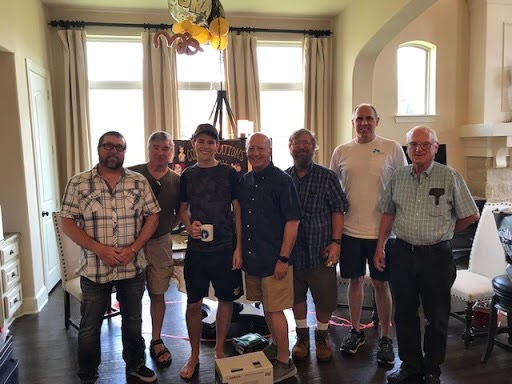
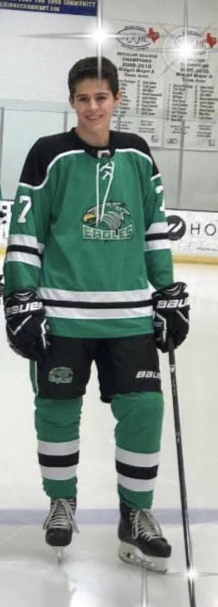

About
Context beyond the current role: where the engineering habits came from, how robotics shaped the work, and the education that sits underneath the AI systems I build now.
How I got here
I started programming robots as a kid and never really stopped. A decade with the Dallas Personal Robotics Group taught me to ship imperfect hardware, debug in public, and care about systems that move in the real world. That same bias—prototype, measure, iterate—shows up in the AI tooling I build at Trellix today.
I am based in The Colony, Texas. Outside of software I still care about mechanical systems, competition robotics, and building things people can actually use—whether that is a support workflow or a coffee robot.
Education
B.S. Computer Science, The University of Texas at Dallas · Cum Laude · GPA 3.73 · August 2019 – December 2023.
Before UTD I built the foundation at Collin College over about two and a half years, with a GPA of 3.8. Coursework and team projects there led into internships, competition work, and the computer vision systems that still influence how I approach perception problems.
Organizations & community
Dallas Personal Robotics Group (DPRG)

Active member since 2013. DPRG has been the longest-running apprenticeship of my career: mentors, competition deadlines, and a community that treats robotics as a craft. Many of the robots on the Projects page grew out of that room.
Phi Theta Kappa

Member of Phi Theta Kappa, the international honor society focused on scholarship, leadership, and service during my time at Collin College.
Hockey

About a decade of hockey shaped how I work with teams under pressure. In my final year I received the Model Hockey Player Award—recognition that still reminds me teamwork and work ethic matter as much as individual skill.